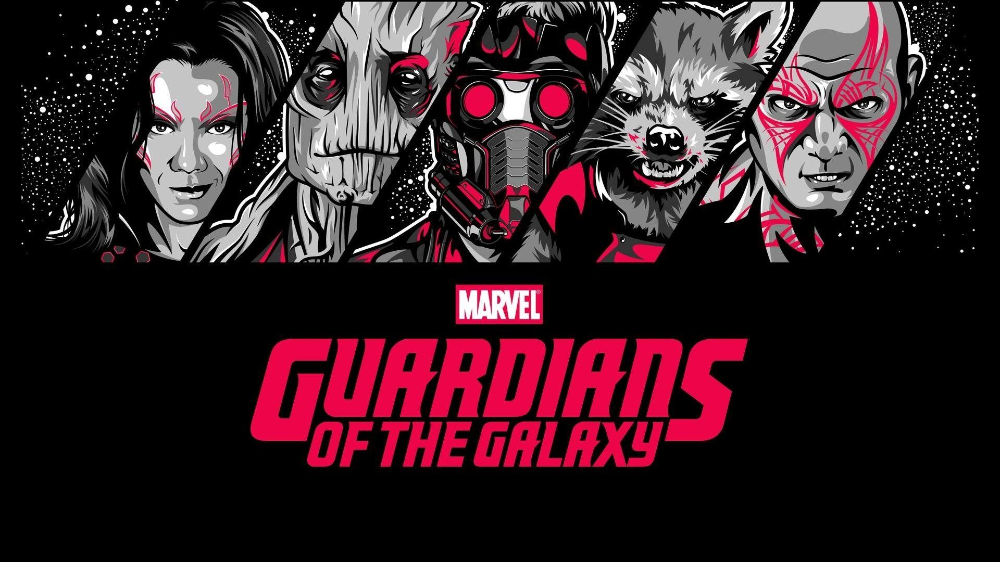

Marvel Cinematic Universe (MCU) phase-3
Phase 3 of the Marvel Cinematic Universe (MCU) was an ambitious and action-packed
series of films that concluded several character arcs while introducing new heroes
and raising the stakes for the entire universe. Here's a brief explanation of Phase 3:
- 1. Captain America: Civil War (2016) - The Avengers are divided into
two factions, led by Captain America and Iron Man, as they clash over
government oversight and the Winter Soldier's actions.
- 2. Doctor Strange (2016) - Dr. Stephen Strange, a brilliant surgeon,
discovers the mystical arts and becomes the Sorcerer Supreme,
protecting the world from mystical threats.
- 3. Guardians of the Galaxy Vol. 2 (2017) - The Guardians'
bond is tested as they uncover the mystery of Peter Quill's father
while dealing with personal conflicts and cosmic foes.

- 4. Spider-Man: Homecoming (2017) - Peter Parker, aka Spider-Man,
navigates the challenges of being a teenage superhero while
facing off against the Vulture.
- 5. Thor: Ragnarok (2017) - Thor confronts Hela, the goddess of death,
and is forced to endure a gladiatorial showdown with his old friend,
the Hulk, on a distant planet.
- 6. Black Panther (2018) - T'Challa returns to Wakanda to become
its king and must defend his nation and its vibranium
technology from external threats.
- 7. Avengers: Infinity War (2018) - The Avengers and their
allies unite to stop the powerful cosmic tyrant Thanos
from acquiring the all-powerful Infinity Stones
- 8. Ant-Man and The Wasp (2018) - Scott Lang, as Ant-Man, teams
up with Hope van Dyne (the Wasp) to rescue her mother from the quantum
realm while dealing with new adversaries
- 9. Captain Marvel (2019) - Carol Danvers becomes Captain
Marvel and discovers her true identity while
defending Earth from an alien invasion.
- 10. Avengers: Endgame (2019) - The surviving Avengers
plan a desperate mission to undo Thanos' devastating
snap and restore the universe.

- 11. Spider-Man: Far From Home (2019) - Peter Parker
grapples with the aftermath of Endgame and faces new
threats during a school trip abroad.
Phase 3 wrapped up several long-running storylines while
setting the stage for the future of the MCU, introducing new
characters and story arcs that would continue to
unfold in Phase 4 and beyond.
Phase 3 was a culmination of over a decade of storytelling
and successfully delivered numerous climactic moments, emotional arcs,
and unexpected twists, leaving a significant impact on the MCU's future.
EXPLORE MORE